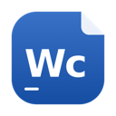
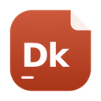
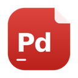
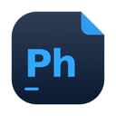
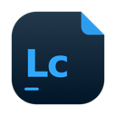
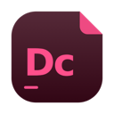
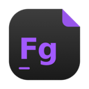
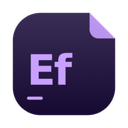
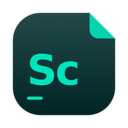

Na barra de menus
Um ícone ao lado do relógio abre o launcher e procura atualizações dos apps e do próprio launcher.
13 apps gratuitos num launcher só
Texto como no Word, planilhas como no Excel, imagens como no Photoshop, e ainda apresentações, PDF, vídeo, áudio, design e CAD. O BetterCraft instala e mantém em dia os 13 apps do Craft App Suite: gratuitos, de código aberto e nativos no Mac, com ícones redesenhados.
macOS 11 Big Sur ou mais novo · Apple Silicon e Intel · Gratuito
O que você ganha
O Craft App Suite é uma coleção de apps gratuitos e de código aberto da equipe ArtCraft, feitos do zero em Rust para rodar nativos no Mac, sem Electron. Cada um faz o trabalho de um programa pago conhecido e abre os arquivos que você já tem, como .docx, .xlsx, .pptx e .psd.

Textos e documentos, com faixa de opções, estilos e controle de alterações. Abre e salva .docx.
Alternativa ao Microsoft WordPlanilhas com fórmulas, gráficos e tabelas dinâmicas. O formato nativo é o .xlsx.
Alternativa ao Microsoft Excel
Apresentações em tela cheia, com formas e conectores. Abre e salva .pptx e exporta PDF.
Alternativa ao Microsoft PowerPoint
Lê, edita, organiza e protege PDFs, com comentários.
Alternativa ao Adobe Acrobat
Edição de imagens com camadas, máscaras e texto. Abre e salva arquivos .psd.
Alternativa ao Adobe Photoshop
Biblioteca de fotos e revelação de RAW, sem mexer no original.
Alternativa ao Adobe LightroomIlustração vetorial, com SVG e PDF.
Alternativa ao Adobe Illustrator
Diagramação de revistas, livros e folhetos. Importa e exporta IDML.
Alternativa ao Adobe InDesign
Design de interfaces e protótipos, offline e sem conta.
Alternativa ao FigmaEdição de vídeo com linha do tempo, cor e som.
Alternativa ao Adobe Premiere Pro
Animação de textos e gráficos, composição e efeitos visuais.
Alternativa ao Adobe After Effects
Gravação, edição e mixagem de áudio em várias faixas.
Alternativa ao Pro Tools e ao AuditionDesenho técnico 2D e 3D, com linha de comando e camadas. Abre DXF e DWG.
Alternativa ao AutoCADOs apps Craft são da ArtCraft, projetos novos e em desenvolvimento ativo. Não são da Microsoft, da Adobe, da Figma, da Avid nem da Autodesk, e o BetterCraft não instala programas dessas empresas. Os nomes citados são marcas dos seus donos.
Instalar, abrir e atualizar
Sem caçar downloads em 13 páginas diferentes: cada app tem uma linha com a versão e um botão. Instalar, Abrir ou Atualizar, o launcher cuida do resto e põe o app em Aplicativos, como se você tivesse instalado à mão.
Bônus: ícones redesenhados
"Quais ícones usar?" fica na barra do launcher. Redesign veste cada app Craft instalado com o ícone BetterCraft no Finder, no Launchpad e no Dock, até o do app que já está aberto. Originais Craft devolve os ícones dos próprios apps. Os nomes não mudam.
O ícone original de cada app e o ícone BetterCraft que ele ganha no Mac.
O app continua sendo o mesmo app: mesmo nome de arquivo, mesma versão. Por isso o launcher segue encontrando e atualizando cada um normalmente.
Visual
Cantos retos, linhas finas e letras de máquina de escrever, no visual da ArtCraft. O tema segue o sistema ou fica fixo em escuro ou claro.
Ajustes
Atualizações, tema e o conjunto de ícones. O resto do launcher original, como páginas de apps, avisos e links sociais, ficou de fora.
Um ícone ao lado do relógio abre o launcher e procura atualizações dos apps e do próprio launcher.
As versões novas do BetterCraft chegam pelo witchmymac.com, com uma verificação por dia.
Escrito só em Rust, com interface nativa. Sem Electron e sem web view.
Acompanha o ArtCraft Launcher original e traz as novidades dele.
O jeito mais rápido é uma linha no Terminal: ela baixa a versão mais nova, confere o arquivo e instala, sem aviso do macOS.
Prefere baixar o .dmg? Arraste o app para Aplicativos e libere na primeira vez, com um comando ou pelos Ajustes do Sistema. Ver o guia completo.